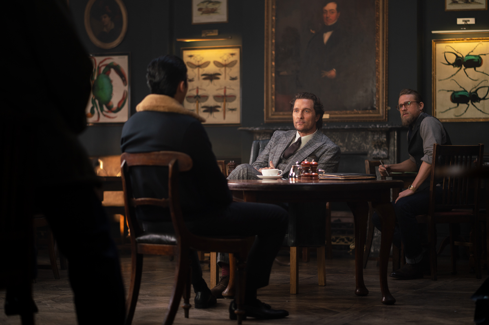
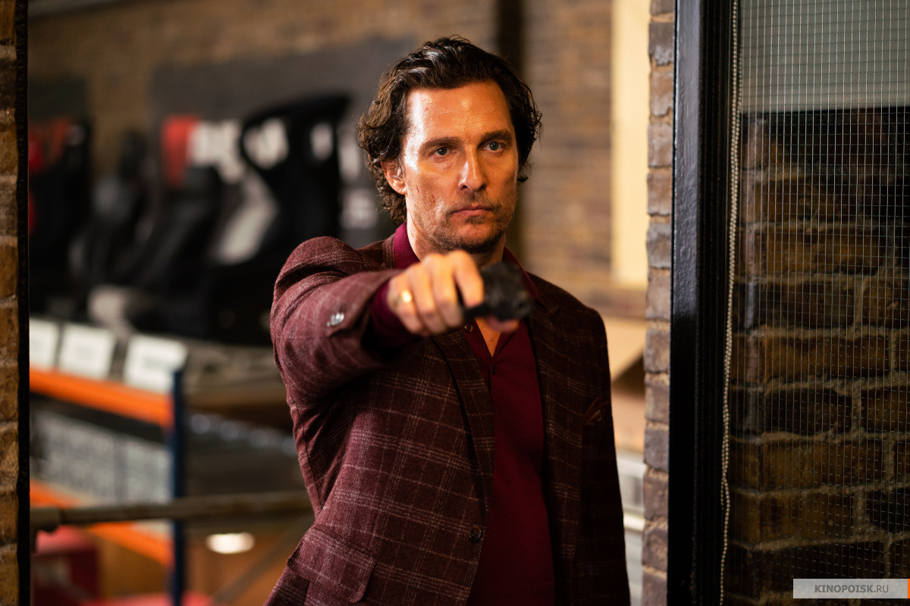

Вся история подаётся как рассказ в рассказе, и от происходящего испытываешь настоящее наслаждение. Ты словно слушаешь рассказ, наполненный правдой лишь наполовину - что-то приукрашено, чего-то вообще не было, что-то искажено для красивого словца, а что-то намеренно утаено. В такой ситуации доверять рассказчику не стоит, но слушать всё равно интересно
Тем более, что история подаётся крайне изобретательно - с регулярными прерываниями на едкие комментарии, открытие очередной бутылки дорогущего вискаря, зачитывания диалога по ролям и другими походами в туалет. Любопытный момент всей истории заключается в том, что вся история вертится вокруг бизнеса марихуаны, который вот вот станет легальным и это совмещено с рядом любопытных аллюзий. Например, сценарий Флэтчера называется "Куст", что с одной стороны намекает на озвученный товар, с другой это аллюзия на войну банд за влияние, которая ненароком развернулась на фоне озвученных событий
Юмор - обязательная составляющая фильмов Гая Ричи и здесь он не подвёл от слова совсем. Шутки здесь обязательный элемент, который разбавляет гангстерские будни и складывается в целые цепочки взаимосвязанных элементов, которые словно расставленные фишки домино подталкивают друг друга, вызывая в финале бурный восторг. Здесь и чёрный юмор ("Гравитация его убила"), и чеховские ружья ("Это пресс-папье"), и обязательные клички вместо имён (Сухой Глаз, Тренер, Праймтайм и прочие), и набор стереотипов об английской вежливости, поглощении чая и еврейской жадности.